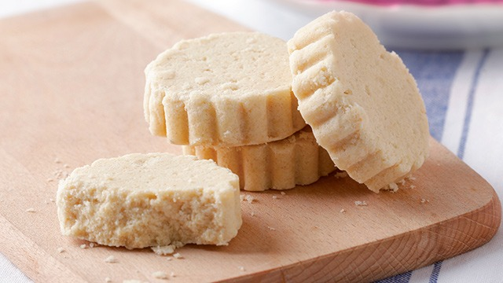
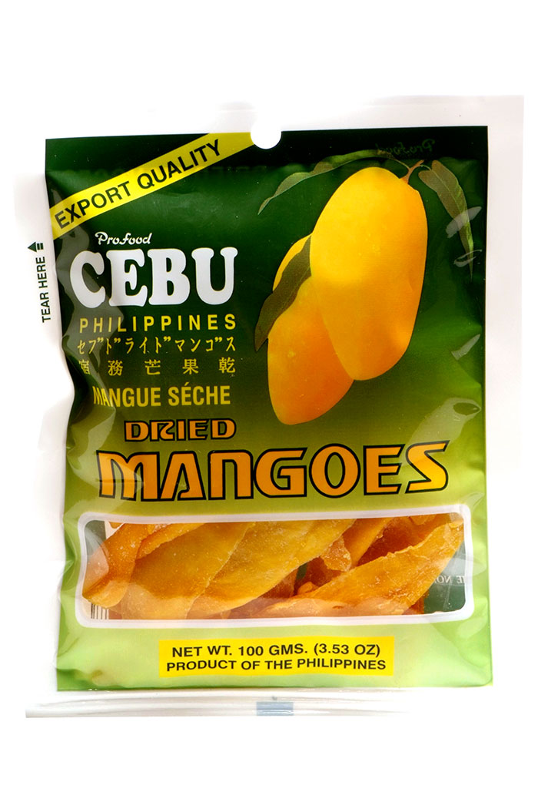

Classic Polvoron
Toasted flour, milk, and sugar pressed the traditional way. Box of 12, individually wrapped.
A small pasalubong marketplace, built by hand
FiliBong gathers polvoron, pili nut tarts, and dried mangoes straight from small Filipino makers so you always have something to bring home — no middlemen, no markup drama, just good pasalubong from people who make it well.

Three picks, restocked weekly. Tap a card to learn more.

Toasted flour, milk, and sugar pressed the traditional way. Box of 12, individually wrapped.

Buttery tart shells filled with roasted pili nut and muscovado caramel. Box of six.

Sun-ripened Guimaras mangoes, sliced and dried with nothing added. 150g resealable pouch.
"Bayanihan means carrying the load together — that's the whole business model."
FiliBong started as a weekend stall and grew into a small online pasalubong shop connecting Filipino home cooks and small producers directly with customers who want the real thing — not a mass-produced copy.